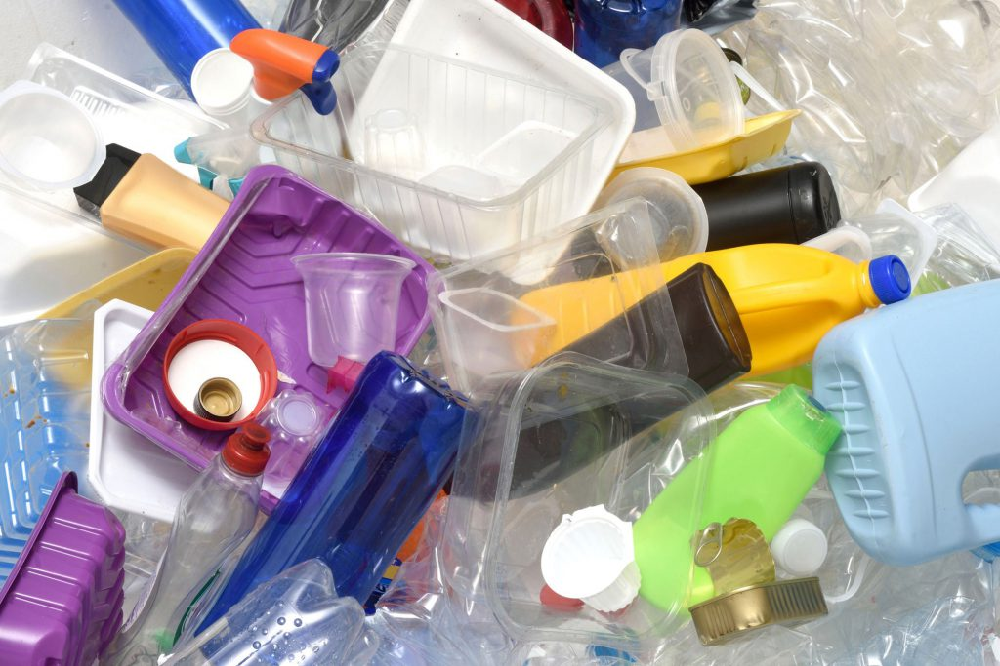
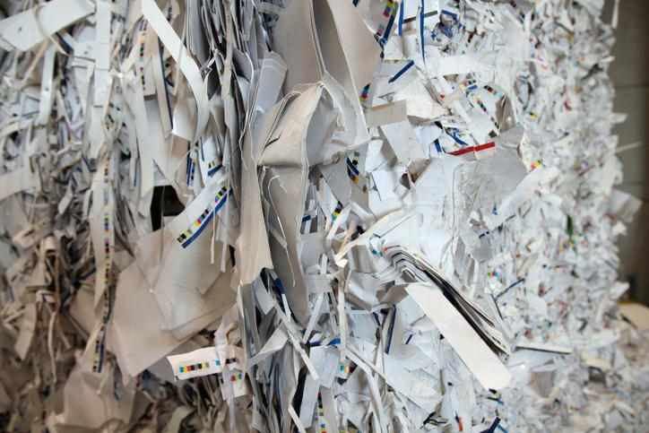
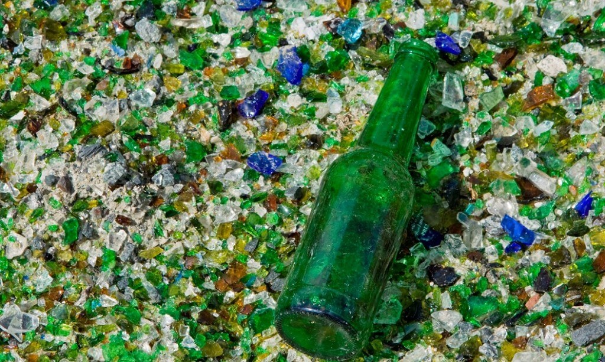

¡Recicla y Ayuda al Planeta!
La Importancia del Reciclaje
El reciclaje es crucial para reducir residuos, conservar recursos naturales y ahorrar energía. Ayuda a disminuir la contaminación, proteger la biodiversidad y combatir el cambio climático al evitar la extracción de materiales vírgenes y reducir la emisión de gases de efecto invernadero. Además, fomenta la economía circular, creando empleos en el sector del reciclaje y promoviendo prácticas sostenibles. Reciclar también educa y genera conciencia sobre la importancia de cuidar el medio ambiente para las futuras generaciones.
¡Tu acción puede marcar la diferencia!

Plástico
Recicla botellas, envases y bolsas plásticas. ¡Juntos podemos reducir la contaminación!

Papel
Recicla tus periódicos, revistas y cajas de cartón para darles una nueva vida.

Vidrio
Recicla botellas y frascos. El vidrio se puede reciclar infinitamente sin perder calidad.
Consejos para un uso correcto:
- Separar los residuos: Antes de tirar cualquier material, asegúrate de separarlo según su tipo.
- No mezclar: No pongas en un contenedor de reciclaje materiales que no sean reciclables (como residuos orgánicos o plásticos no aceptados).
- Evitar contaminación: Los residuos deben estar limpios para evitar que los materiales reciclables se contaminen (por ejemplo, enjuagar las latas antes de ponerlas en el contenedor amarillo).
- Tamaño adecuado: Utiliza los contenedores adecuados según la cantidad y el tipo de residuo, y evita sobrecargar los contenedores, para asegurar que el proceso de recolección y reciclaje sea eficiente.
El uso correcto de los contenedores de basura es fundamental para reducir el impacto ambiental, facilitar el reciclaje y promover una gestión más eficiente de los residuos.
El primer paso para comenzar a reciclar es saber qué tipo de residuos va en cada contenedor. Aquí te mostramos los colores y qué tipo de materiales se deben depositar en cada uno:
¡DIVIERTE Y APRENDE!
Aprieta este botón para resolver un pupiletras
¡Comienza Hoy!
"Reciclar no es solo un acto de responsabilidad, sino un hermoso compromiso con el futuro de nuestro planeta y las generaciones futuras. ¡Sé parte del cambio, cuidemos juntos lo que amamos!"
Más Información sobre Reciclaje